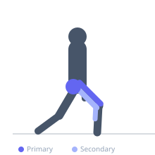
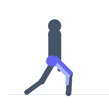

Exercise guide / Split Jump
Split Jump
The split jump is a plyometric lunge variation in which the athlete is in a lunge position, jumps explosively, switches the legs in mid-air, and lands in the opposite lunge. It develops unilateral explosive leg drive, hip flexor and extensor power, and airborne leg switching coordination. The exercise is more demanding than a squat jump due to the asymmetric force production and landing requirements, and is commonly used in sport conditioning and circuit training.
Primary muscles
rectus femoris
gluteus maximus
iliacus
Secondary muscles
biceps femoris long head
gastrocnemius medial
Stabilizers
gluteus medius
transverse abdominis
Equipment
No Equipment (Bodyweight)


Starting position
- Begin in a lunge position — right foot forward, left foot back, both knees bent approximately 90 degrees.
Setup
- No equipment needed. Ensure adequate space and a non-slip surface.
Steps
- Step 1: Begin in a lunge position with the right foot forward.
- Step 2: Explosively drive off both feet, jumping as high as possible.
- Step 3: Switch legs in the air — left foot comes forward, right foot goes back.
- Step 4: Land in the opposite lunge (left foot forward) and absorb through the ankle, knee, and hip.
- Step 5: Immediately jump again, switching legs back to the starting configuration.
Coaching cues
- Drive up — then switch
- Land in a controlled lunge
- Front knee stays over the toes
Breathing
- Exhale sharply on each jump. Breathe during brief rest if pausing between reps.
Range of motion
- Full lunge depth on landing — front thigh approaching parallel to floor. Full extension at takeoff.
Tempo
- Continuous alternating jumps. 10–20 reps (5–10 per leg) for conditioning; 6–10 for power.
Common mistakes
- Not fully extending at takeoff before the leg switch
- Landing with the front knee excessively forward past the toes
- Collapsing the front knee inward on landing
Safety
- High knee stress — ensure good knee tracking in the sagittal plane.
- Regress to static lunges then alternating reverse lunges before adding the jump.
Training
- power: 6–10 reps
- endurance: 10–20 reps
- power: 3–4 sets
- endurance: 3–5 sets
- Rest: {'power': 120, 'endurance': 60}